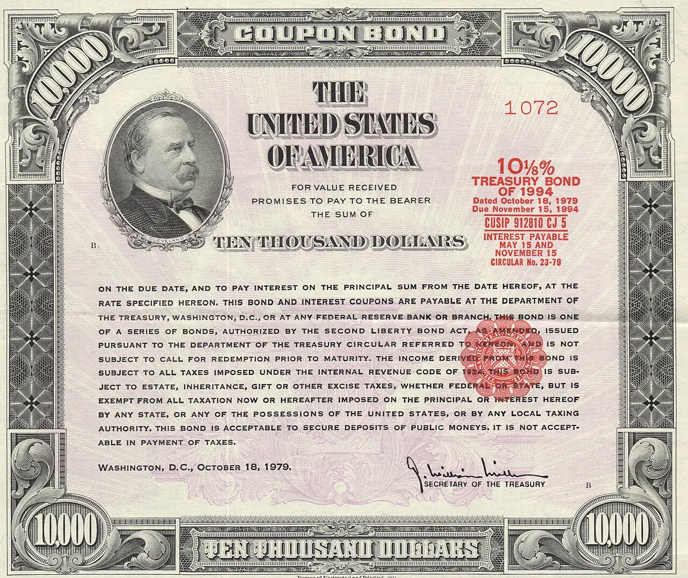

입찰장은 금리의 체온계

미국 국채 시장에서 입찰은 단순한 발행 행사가 아닙니다. 정부가 돈을 빌리는 순간에 투자자가 어느 정도 보상을 요구하는지 드러나는 자리입니다. 같은 10년물이라도 응찰이 두텁고 낙찰 금리가 낮으면 시장은 재정 부담을 아직 감당할 수 있다고 봅니다. 반대로 응찰이 얇고 꼬리 금리가 길게 벌어지면 기준금리가 내려갈 것이라는 기대가 있어도 장기금리는 쉽게 편해지지 않습니다.
최근 장기채를 읽을 때 중요한 단어는 기간 프리미엄입니다. 투자자가 먼 만기까지 돈을 묶는 대가로 요구하는 추가 보상입니다. 물가 불확실성, 재정 적자, 채권 공급, 외국인 수요가 모두 이 안에 들어갑니다. 중앙은행이 단기금리를 내릴 수 있어도 기간 프리미엄이 커지면 주택담보대출과 회사채 금리는 덜 내려갑니다.
입찰 결과에서 먼저 볼 숫자는 낙찰 금리 하나가 아닙니다. 응찰 배율, 간접 응찰자 비중, 프라이머리 딜러가 떠안은 물량, 직전 유통금리 대비 꼬리 폭을 같이 봐야 합니다. 투자자가 충분히 들어오면 발행 물량이 커도 시장은 흡수합니다. 하지만 딜러 부담이 커지면 다음 입찰까지 헤지와 재판매 압력이 남습니다.
누가 장기채를 사나
미국 국채의 안정성은 발행자보다 매수자 구성이 결정할 때가 많습니다. 연기금과 보험사는 장기 부채와 맞추기 위해 꾸준히 사지만 가격이 불리하면 속도를 늦춥니다. 해외 중앙은행은 환율과 외환보유액 운용을 함께 봅니다. 은행은 규제 비율과 예금 흐름을 따지고, 헤지펀드는 금리 차익과 선물 포지션을 계산합니다.
이 매수자들이 같은 방향으로 움직이면 입찰은 편해집니다. 그러나 환헤지 비용이 높거나 달러 유동성이 빡빡하면 외국인 수요는 가격을 더 요구합니다. 보험사는 금리가 충분히 높을 때 장기물을 선호하지만 이미 포트폴리오가 채워져 있으면 추가 매수 여력이 줄어듭니다. 그래서 장기채 수요는 안전자산 선호라는 한 문장으로 설명하기 어렵습니다.
눈여겨볼 지점은 발행 물량이 늘어나는 속도와 실제 저축의 속도입니다. 재정 적자가 커지면 국채는 계속 나오는데, 그 물량을 받아 줄 장기 자금이 같은 속도로 늘지 않으면 금리는 더 높은 보상을 요구합니다. 이것이 기준금리 전망과 장기금리가 엇갈리는 대표적인 이유입니다.
주택금리는 뒤따라 눌립니다
장기 국채 금리가 끈적하면 가장 먼저 체감되는 곳은 주택시장입니다. 미국 모기지 금리는 10년물 국채와 완전히 같지는 않지만 같은 방향으로 움직이는 경우가 많습니다. 국채 입찰이 약해 장기금리가 올라가면 주택 구매자는 더 높은 월 상환액을 받아들여야 하고, 기존 보유자는 낮은 고정금리를 포기하기 어려워 매물을 덜 내놓습니다.
기업도 비슷합니다. 설비투자나 인수합병을 장기 차입으로 조달하는 회사는 기준금리 인하 기대보다 실제 회사채 스프레드와 국채 금리 조합을 봅니다. 장기금리가 내려오지 않으면 투자 의사결정이 뒤로 밀리고, 그 지연은 몇 분기 뒤 고용과 주문에 반영됩니다.
소비자는 중앙은행 발표문을 직접 읽지 않아도 대출 견적서로 금리 환경을 만납니다. 그래서 장기채 입찰이 흔들리면 금융시장의 작은 숫자가 생활비와 기업 계획으로 번집니다. 금리 인하 기대가 살아도 기간 프리미엄이 올라가면 체감 완화는 늦어집니다.
다음 입찰에서 볼 것
앞으로 확인할 첫 지점은 입찰 꼬리입니다. 유통시장에서 예상한 금리보다 낙찰 금리가 얼마나 높았는지 보면 투자자의 요구 수익률을 읽을 수 있습니다. 두 번째는 간접 응찰자 비중입니다. 해외와 기관 수요가 유지되는지 확인하는 데 유용합니다. 세 번째는 발행 일정입니다. 장기물 공급이 몰리는 달에는 같은 수요라도 가격 부담이 커질 수 있습니다.
물가 지표도 중요하지만 장기채에서는 재정 신뢰가 함께 움직입니다. 적자가 줄어들 조짐이 없고 이자 비용이 예산을 더 밀어 올리면 시장은 더 긴 만기에 더 많은 보상을 요구합니다. 반대로 성장 둔화와 물가 안정이 함께 보이면 장기 수요가 돌아올 수 있습니다.
미국 국채 입찰을 보는 목적은 다음 금리 인하 날짜를 맞히는 것이 아닙니다. 금융시장이 미국 정부의 긴 만기 채무를 어느 가격에 받아들이는지 확인하는 일입니다. 그 가격이 편해질 때 주택, 기업 투자, 신흥국 자금 흐름도 함께 숨을 쉽니다.
관련 영상
미국 10년물 국채금리와 장기금리 부담 해설
장기 국채는 경제의 큰 배경음처럼 움직입니다. 하루 낙찰 결과가 모든 방향을 정하지는 않지만, 약한 입찰이 반복되면 투자자는 기준금리보다 재정과 공급을 더 크게 보기 시작합니다. 그래서 이번 국면의 핵심은 인하 기대가 아니라 장기 자금이 미국 국채를 얼마나 기꺼이 받아 주는지입니다.
미국 국채 입찰은 금리 인하보다 기간 프리미엄을 먼저 흔듭니다을 볼 때는 발표 직후의 반응보다 다음 분기까지 이어지는 숫자를 함께 확인하는 편이 좋습니다. 단기 뉴스는 방향을 빠르게 바꾸지만 실제 변화는 계약, 예산, 생산, 소비 습관처럼 느린 항목에서 굳어집니다. 이 차이를 나누어 보면 과장된 기대와 실제 지속 가능성을 구분할 수 있습니다.
가장 실용적인 점검 방법은 한 가지 지표에 기대지 않는 것입니다. 가격, 수요, 비용, 규제, 실행 시간이 같은 방향으로 움직이는지 확인해야 합니다. 어느 하나만 좋아도 나머지가 따라오지 않으면 결과는 늦어지고, 여러 조건이 동시에 맞으면 변화는 예상보다 빠르게 확산될 수 있습니다.
이 주제는 한 번의 결론보다 관찰 순서가 더 중요합니다. 먼저 현재 병목을 확인하고, 그다음 누가 비용을 부담하는지 보며, 마지막으로 그 부담이 가격이나 행동 변화로 이어지는지 봐야 합니다. 그렇게 읽으면 제목보다 구조가 먼저 보입니다.
미국 국채 입찰은 금리 인하보다 기간 프리미엄을 먼저 흔듭니다을 볼 때는 발표 직후의 반응보다 다음 분기까지 이어지는 숫자를 함께 확인하는 편이 좋습니다. 단기 뉴스는 방향을 빠르게 바꾸지만 실제 변화는 계약, 예산, 생산, 소비 습관처럼 느린 항목에서 굳어집니다. 이 차이를 나누어 보면 과장된 기대와 실제 지속 가능성을 구분할 수 있습니다.
가장 실용적인 점검 방법은 한 가지 지표에 기대지 않는 것입니다. 가격, 수요, 비용, 규제, 실행 시간이 같은 방향으로 움직이는지 확인해야 합니다. 어느 하나만 좋아도 나머지가 따라오지 않으면 결과는 늦어지고, 여러 조건이 동시에 맞으면 변화는 예상보다 빠르게 확산될 수 있습니다.